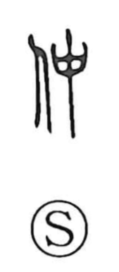

Explanation
仲 is a phono-semantic compound: the person element indicates a human relationship, while 中 provides the sound and the core sense of “middle.” In early Chinese usage, this “middle” referred specifically to birth order among brothers—already noted in ancient glosses—where the Shang period spoke of ranks as great, middle, and small (大・中・小), and the Zhou period as eldest, second, third, and youngest (伯・仲・叔・季). In ancient forms, the graph for the middle brother is distinguished from the emblem for the army’s center: the latter’s banner bears streamers, while the brotherly “middle” does not. From this idea of a person situated “in the middle,” the character naturally came to denote mediation and the ties between people, a sense still alive in Japanese words like nakama, “companions” or “those one does things together with.”